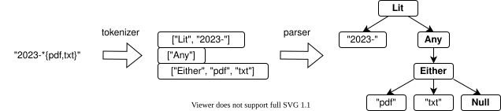
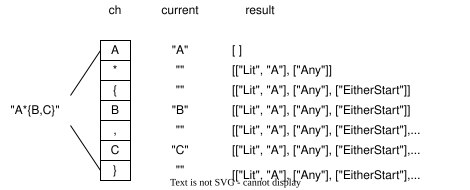
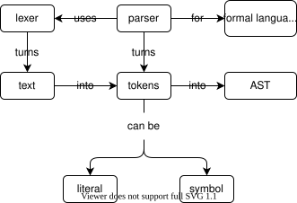

"2023-*{pdf,txt}" is easier to read and write
than Lit("2023-", Any(Either("pdf", "txt")))
How can we translate the former into the latter?
Group characters into tokens
Use tokens to create an abstract syntax tree

Characters like { and * can be processed immediately
But "regular" characters need to be accumulated
Lit("abc") rather than Lit("a", Lit("b", Lit("c")))
When we encounter a special character or '}', we close the current literal token
The , character closes a literal but doesn't produce a token
The result is the final (flat) list of tokens
We could pass around a list and append to it
But we also need to know the characters in each Literal
and the options in each Either
So create a class rather than a function
def tok(self, text):
self._setup()
for ch in text:
if ch == "*":
self._add("Any")
elif ch == "{":
self._add("EitherStart")
elif ch == ",":
self._add(None)
elif ch == "}":
self._add("EitherEnd")
elif ch in CHARS:
self.current += ch
else:
raise NotImplementedError(f"what is '{ch}'?")
self._add(None)
return self.result
Call self._setup() at the start so that the tokenizer can be re-used
Don't call self._add() for regular characters
Add literals when we see special characters
And after all the input has been parsed
def _add(self, thing):
if len(self.current) > 0:
self.result.append(["Lit", self.current])
self.current = ""
if thing is not None:
self.result.append([thing])
self._add(None) means "add the literal but nothing else"
def test_tok_empty_string():
assert Tokenizer().tok("") == []
def test_tok_any_either():
assert Tokenizer().tok("*{abc,def}") == [
["Any"],
["EitherStart"],
["Lit", "abc"],
["Lit", "def"],
["EitherEnd"],
]
def _parse(self, tokens):
if not tokens:
return Null()
front, back = tokens[0], tokens[1:]
if front[0] == "Any": handler = self._parse_Any
elif front[0] == "EitherStart": handler = self._parse_EitherStart
elif front[0] == "Lit": handler = self._parse_Lit
else:
assert False, f"Unknown token type {front}"
return handler(front[1:], back)
front[0] is the token's name, front[1:] is any other data
back is the remaining tokens
Look for a _parse_thing method to handle each token
Introspection: having a program look up a function or method inside itself while it is running
Dynamic dispatch:
using introspection to decide what to do next
rather than a long chain of if statements
These are powerful techniques and we use them frequently
def _parse_Any(self, rest, back):
return Any(self._parse(back))
def _parse_Lit(self, rest, back):
return Lit(rest[0], self._parse(back))
_parse can find themEither is Messy def _parse_EitherStart(self, rest, back):
if (
len(back) < 3
or (back[0][0] != "Lit")
or (back[1][0] != "Lit")
or (back[2][0] != "EitherEnd")
):
raise ValueError("badly-formatted Either")
left = Lit(back[0][1])
right = Lit(back[1][1])
return Either([left, right], self._parse(back[3:]))
back until it hits EitherEnd def _parse_EitherStart(self, rest, back):
children = []
while back and (back[0][0] == "Lit"):
children.append(Lit(back[0][1]))
back = back[1:]
if not children:
raise ValueError("empty Either")
if back[0][0] != "EitherEnd":
raise ValueError("badly-formatted Either")
return Either(children, self._parse(back[1:]))
def test_parse_either_two_lit():
assert Parser().parse("{abc,def}") == Either(
[Lit("abc"), Lit("def")]
)
Match objectsa == b is "just" a.__eq__(b)Match class does shared workLit objects are checking for the same textclass Match:
def __init__(self, rest):
self.rest = rest if rest else Null()
def __eq__(self, other):
return (other is not None and
self.__class__ == other.__class__ and
self.rest == other.rest)
class Lit(Match):
def __init__(self, chars, rest=None):
super().__init__(rest)
self.chars = chars
def __eq__(self, other):
return super().__eq__(other) and (
self.chars == other.chars
)
